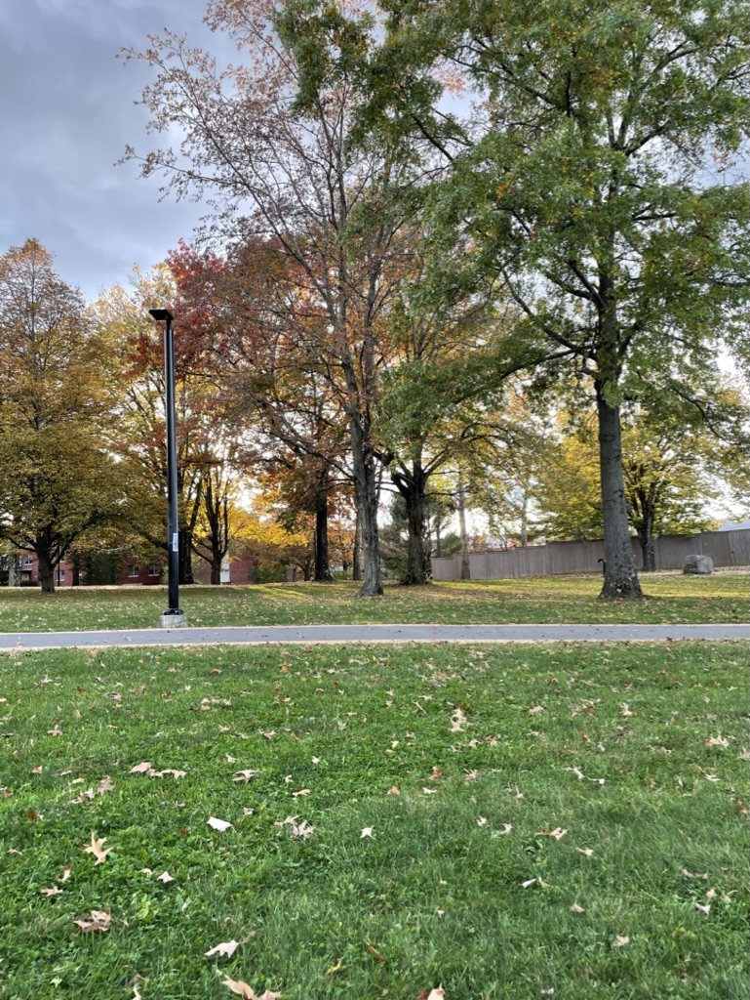
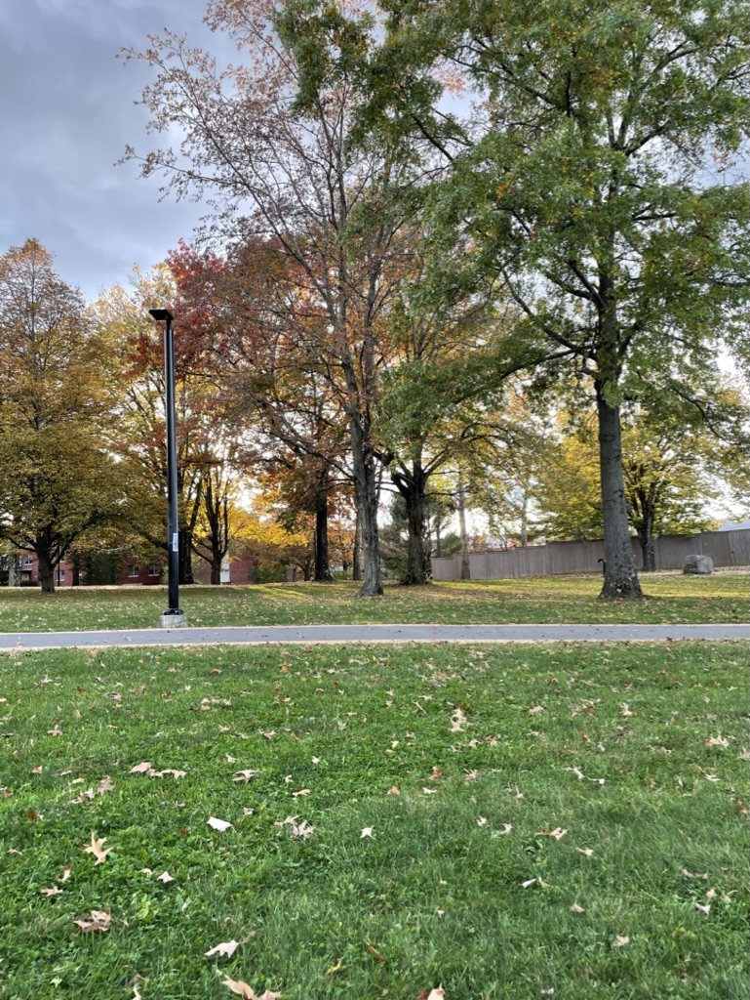

Hello! My name is Sarah Smith and I'm a freshman at SUNY New Paltz!
I am 18 years old and some of my hobbies include writing, reading, dancing, and going for nature walks! I attend New Paltz with a major in Journalism and a minor in Creative Writing, and hope to publish my own book one day!
I grew up in South Glens Falls, NY, and a fun fact about me is that I was the selected student speaker for my high school graduation and delivered a speech in front of 1,000 people!
 
